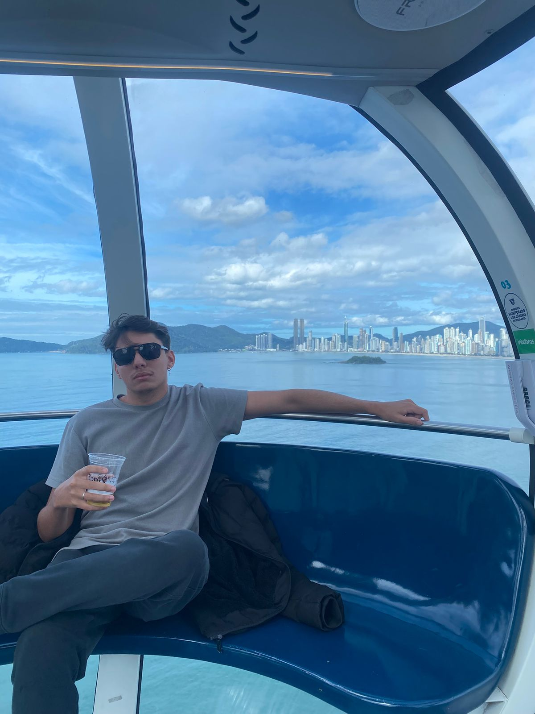

Sobre o Circuito Terê Verde
Conectando você com a natureza exuberante de Teresópolis
Nossa História
O projeto Circuito Terê Verde do grupo 11 nasceu da paixão pela natureza exuberante de Teresópolis e da vontade de compartilhar as belezas da Região Serrana com aventureiros de todo o Brasil.
Localizada no coração da Serra dos Órgãos, Teresópolis oferece algumas das trilhas mais espetaculares do estado do Rio de Janeiro. Nossa missão é tornar essas experiências acessíveis, seguras e inesquecíveis para todos os níveis de aventureiros.
Desde caminhadas leves até desafios épicos como a Pedra do Sino, organizamos experiências que respeitam a natureza e promovem o turismo sustentável na região.
Nossa Equipe

Enzzo Fadiga
🎯 Desenvolvedor & Explorador
Montanhista há 15 anos, conhece cada trilha da região como a palma da mão, sentimento identico quando se trata de seus códigos Legados!
Jonathan Bandeira
🌿 Techlead & Biólogo
Especialista em fauna e flora da Mata Atlântica e em Análise de Projetos, torna cada trilha uma aula de biologia e cada experiência no sistema uma Aventura!

João Victor Souza
🚑 Q.A & Guia de Segurança
Bombeiro aposentado e atual Q.A que garante a segurança de todos os participantes em nossas aventuras, sejam no software ou nas trilhas!
Nossos Valores
Sustentabilidade
Promovemos o turismo responsável, respeitando e preservando o meio ambiente para as futuras gerações.
Segurança
A segurança dos nossos aventureiros é prioridade absoluta. Todos os guias são certificados e experientes.
Inclusão
Oferecemos trilhas para todos os níveis, desde iniciantes até montanhistas experientes.
Educação
Cada trilha é uma oportunidade de aprender sobre a rica biodiversidade da Mata Atlântica.
Por que escolher o Circuito Terê Verde?
🎯 Experiência Local
Conhecemos cada pedra, cada árvore, cada vista da região. Nossa expertise local garante que você viverá as melhores experiências que Teresópolis tem a oferecer.
🌟 Grupos Pequenos
Trabalhamos com grupos reduzidos para garantir atenção personalizada e menor impacto ambiental, proporcionando uma experiência mais íntima com a natureza.
📱 Tecnologia Integrada
Nossa plataforma digital facilita o agendamento, fornece informações detalhadas e mantém você conectado com nossa comunidade de aventureiros.